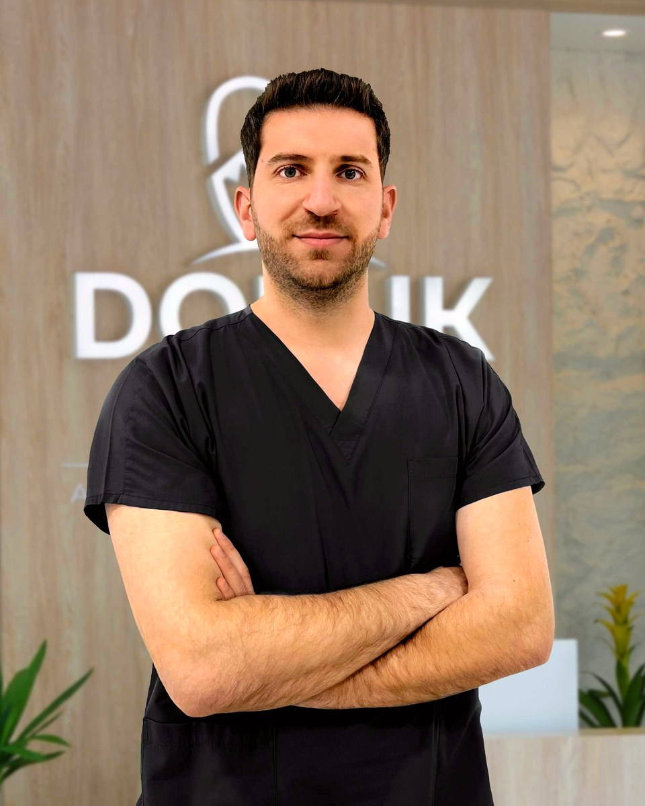

ODKurucu · Ağız, Diş ve Çene Cerrahisi Uzmanı
Okan Duran
Erciyes Üniversitesi Diş Hekimliği Fakültesi mezunu. Uzmanlık eğitimini Bolu Abant İzzet Baysal Üniversitesi'nde tamamladı ve Doruk Smile'ı kurdu. Ağız, diş ve çene cerrahisi alanındaki vakalarda kliniğin başında yer alıyor.